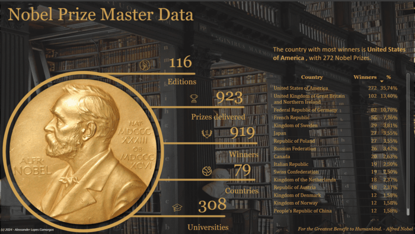
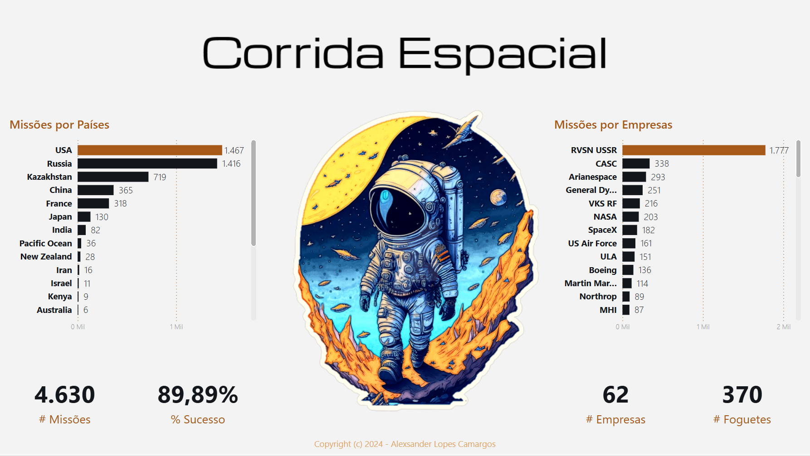

👋 Hi, I'm Alexsander Camargos
Transforming Data into Strategy
and I'm a
Who I am
Passionate about creating intelligent systems that solve real-world problems
I’m Alexsander Lopes Camargos, a Business Intelligence Analyst at Sicoob Credijequitinhonha, transforming raw data into strategic business impact. With a unique blend of 15+ years in administrative leadership and deep technical expertise in data engineering, analytics, and visualization, I bridge business acumen with data science to solve complex challenges.
My philosophy is simple: technology enables solutions, but business understanding drives value. I specialize in the full data lifecycle—from ELT pipelines (SQL, Python) and statistical modeling to compelling visualizations (Tableau, Power BI)—always focusing on tangible outcomes:
- Boosted customer acquisition by 10% through segmentation analysis that uncovered hidden market opportunities.
- Reduced critical report generation time by 90% via query optimization and automation, enabling daily KPI access for executive decision-making.
- Streamlined data workflows by modernizing legacy systems, accelerating insights delivery by 5x for cross-functional teams.
Armed with degrees in Business Administration and Economics—and currently advancing my skills in time-series forecasting and applied statistics—I thrive where analytical rigor meets real-world impact. I don’t just build dashboards; I uncover the stories in data that redefine strategy.
Let’s connect to discuss how I can help your organization turn data into a competitive advantage.
Discover more about my journey.
Education
-
MBA in Data Science and Analytics
USP/Esalq
Expected Dec 2026 -
Postgraduate in Applied Statistics
Anhanguera Educacional
2025 -
MBA in Business Intelligence
Anhanguera Educacional
2024 -
Bachelor of Economics
Universidade Cesumar
2024 -
Bachelor of Business Administration
UNINTER
2016

Technologies
Here are a few technologies I've been working with recently:
-
Languages & Tools
- Languages: Python, R, SQL
- Processing Libraries: PySpark, Pandas, Polars, NumPy, DuckDB
- Visualization Libraries: Matplotlib, Seaborn, Plotly
- Business Intelligence: DAX, Power Query M
-
Modeling & Machine Learning
- Libraries: Scikit-learn, Statsmodels
- Techniques: Classification, Regression, Clustering, Random Forest, SVM, Gradient Boosting (AdaBoost, XGBoost)
- Model Validation: Cross-validation, Performance Metrics (Accuracy, Precision, Recall, F1-Score, AUC-ROC)
-
Data Visualization & Storytelling
- BI Tools: Power BI, Tableau, Looker Studio
- Code Dashboards: Streamlit, Rill, Evidence
- Techniques: Data Storytelling, Stakeholder Communication
-
Engineering & Databases
- SQL Databases: PostgreSQL, MySQL, MariaDB, SQL Server
- NoSQL Databases: MongoDB
- Access Tools: Datagrip, DBeaver
-
Cloud & Data Pipelines
- Cloud Platforms: AWS, Azure, Oracle Cloud
- Data Platforms: Databricks, MotherDuck
- Deployment: Vercel, Netlify, Linode
-
Behavioral & Management Skills
- Communication: English (EF SET B2), Data Storytelling for Stakeholders
- Business Strategy: KPI & OKR Definition, Risk Analysis
- Agile Methodologies: Scrum, Kanban
- Analytical Fundamentals: Probability and Applied Statistics
Experience
Business Intelligence Analyst
@ Sicoob CredijequitinhonhaResponsible for transforming data into strategic insights to drive decision-making. I bridge the gap between technical data engineering and business strategy to unlock value.
- Designed and implemented a Power BI budget monitoring dashboard, enhancing strategic visibility for leadership.
- Optimized SQL queries to reduce critical report generation time, enabling daily KPI tracking.
- Conducted customer segmentation analysis that identified new opportunities, leading to a 10% increase in customer acquisition.
Risk & Controls Analyst
@ Sicoob CredijequitinhonhaFocused on process automation and risk mitigation through data-driven solutions.
- Automated check compensation monitoring using Power Query, reducing reporting time by 90%.
- Developed real-time treasury monitoring systems to identify cash discrepancies immediately.
- Created Excel macros and automated workflows to streamline recurring reporting tasks.
Senior Administrative Analyst
@ Registry Office of CapelinhaLed administrative operations and compliance initiatives, laying the foundation for process-oriented thinking.
- Led the adaptation of internal processes to comply with LGPD (General Data Protection Law).
- Managed full lifecycle document processing ensuring compliance with CNJ regulations.
- Optimized document workflows to guarantee deadline adherence and legal conformity.
Some Things I've Built
-

Featured Project
Python Fundamentus
The Python Fundamentus is an API developed in Python designed to facilitate quick access to the main fundamental indicators of the most relevant stocks in the Brazilian market. By utilizing the information available on the Fundamentus website, it provides detailed financial and fundamentalist information of companies listed on B3, this project aims to bring the wealth of financial data directly to your Python applications in an efficient and organized manner.- Python
- Scraping
- Beautiful Soup
- Requests
-

Featured Project
Bacen IF.data AutoScraper & Data Manager
The Central Bank of Brazil (Bacen) publishes detailed reports on a quarterly basis, featuring a wide range of data about financial institutions, available through the IF.data Portal. Although this data is valuable, it requires careful processing and analysis to extract significant information. The main goal of this project is to apply data mining techniques to the datasets from the IF.data Portal with the aim of creating insights about the Brazilian financial system.- Python
- Selenium
- pathlib
-
 Featured Project
Nobel Prize Master Data
This project, through a report in Power BI, analyzes Nobel Prize laureates from 1901 to 2019 to explore trends, global recognition, and diversity. Focusing on the geographical distribution, it highlights the leadership of the United States with 272 awards (35.74% of the total), followed by the United Kingdom and Germany, reflecting the dominance of certain nations and the universality of the award. Utilizing Power BI's analytical tools for dynamic and interactive visualization, the project encourages discussion on its findings, underscoring the historical impact of the Nobel Prize and fostering debates on excellence in science, literature, and peace, promoting a deeper understanding of its significance and evolution.- Microsoft Power BI
- Microsoft Power Query
- DAX (Data Analysis Expressions)
-
 Featured Project
Space Race
This project, titled "Corrida Espacial" (Space Race), presents a comprehensive Power BI dashboard analyzing global space missions throughout history, encompassing 4,630 missions with an impressive 89.89% success rate. The visualization highlights the dominance of the USA (1,467 missions) and Russia (1,416 missions) in space exploration, while also tracking contributions from emerging space powers like Kazakhstan, China, and France. On the organizational front, RVSN USSR leads with 1,777 missions, followed by various agencies and companies including CASC, Arianespace, and NASA. The dashboard provides temporal analysis showing mission frequency since 1960, with notable peaks in the 1970s and recent years (reaching 157 missions), alongside geographical launch site distribution and rocket performance metrics covering 370 different rocket models across 62 companies. This interactive tool offers valuable insights into the evolution and current state of humanity's space exploration endeavors, serving as a historical record of our collective achievements beyond Earth.- Microsoft Power BI
- Microsoft Power Query
- DAX (Data Analysis Expressions)
Get In Touch
My inbox is always open. If you want to offer me an opportunity, have a question or just want to say hi, I will try my best you answer you!